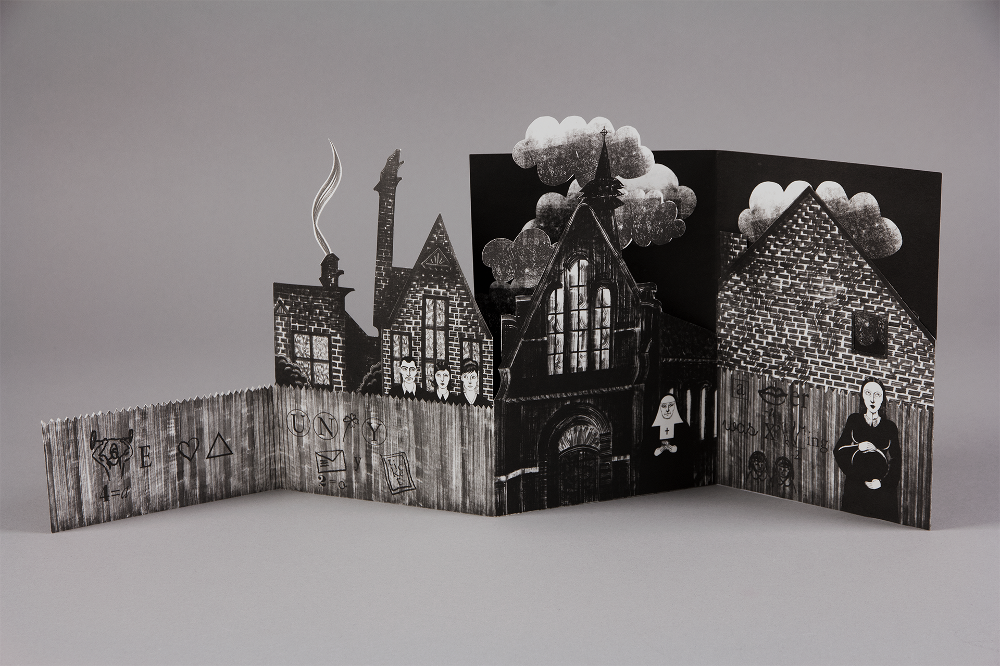

This artist book was made in response to a South London Gallery brief in which students were asked to create interactive visual narratives inspired by South London locations. My assigned location was the mysterious church of the Rosicrucian Order in Peckham and its surroundings. The design of the book is based on primary on-site research and observational drawings of the area. Proust’s concept of involuntary memory inspired me to explore the idea of rediscovery in the book, namely through the interpretation of the signs and symbols that constitute the ‘magical’ elements of our daily existence: ordinary stories lost in an undefined time. The book contains anecdotes about its characters written as rebuses, puzzle devices that combine illustrated pictures with letters to depict words and phrases. By solving all the riddles, it is also possible to precisely date the narration of the stories.
Website